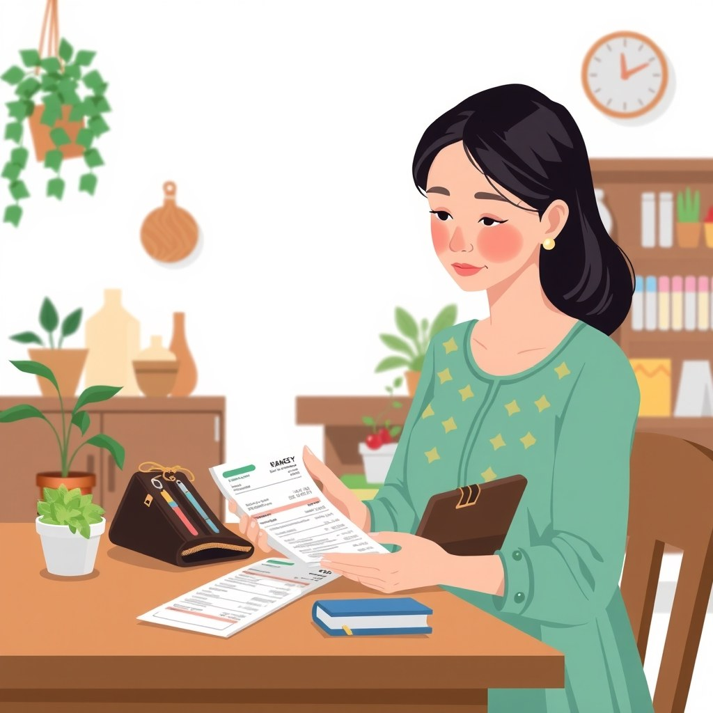
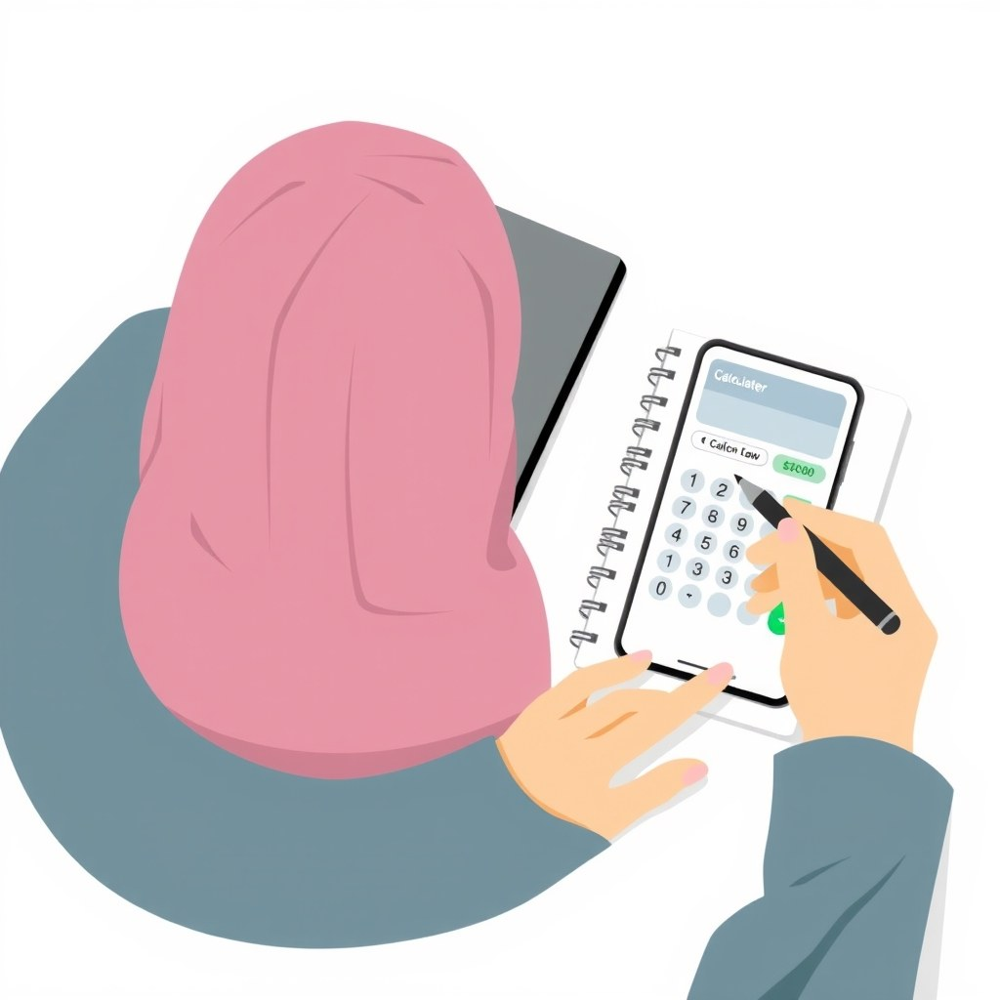

1. Apa Itu Diskoneksi Makro-Mikro dalam Keuangan Rumah Tangga?

Diskoneksi makro-mikro adalah sebuah kondisi ekonomi ketika indikator statistik di tingkat negara tampak membaik dan stabil, tetapi kondisi keuangan harian masyarakat di tingkat rumah tangga justru terasa makin terhimpit. Dalam skala makroekonomi, pemerintah mengukur pertumbuhan Produk Domestik Bruto (PDB) dari akumulasi industri besar, proyek infrastruktur nasional, hingga volume ekspor komoditas. Namun di skala mikroekonomi rumah tangga, yang kamu rasakan secara langsung adalah harga beras, minyak goreng, sewa kontrakan, hingga biaya pendidikan anak yang merayap naik jauh melampaui persentase kenaikan gaji tahunanmu.
Bayangkan seorang pengendara sepeda motor yang merasa penggunaan bensinnya irit karena indikator jarum di panel instrumen dasbor bergerak sangat lambat. Pengendara tersebut merasa tenang dan terus memutar gas kendaraan dengan kecepatan tinggi. Padahal di saat bersamaan, tangki bahan bakar di bagian bawah mengalami kebocoran halus di beberapa titik. Indikator dasbor memberikan sinyal seolah semuanya aman, tetapi bahan bakar riil di dalam tangki menyusut dengan cepat sampai akhirnya mesin mati mendadak di tengah jalan.
Charles Wheelan dalam bukunya Naked Money menjelaskan bahwa inflasi adalah pencuri tersembunyi yang terus menggerogoti nilai riil uang kertas secara perlahan tanpa pernah disadari pemiliknya. Ketika laju inflasi riil barang kebutuhan pokok harian melonjak lebih tinggi dibandingkan kenaikan pendapatan nominal harianmu, setiap lembar uang kertas yang kamu pegang secara otomatis kehilangan sebagian kekuatan daya belinya. Kenaikan gaji sebesar lima persen tidak ada artinya apabila biaya kebutuhan dapur naik delapan persen pada periode yang sama. Hasilnya, meskipun gajimu secara nominal tampak cukup di atas kertas, kapasitas belanjamu yang sebenarnya sedang mengalami penyusutan drastis.
2. Kenapa Memahami Realita "Makan Tabungan" Ini Penting Buat Kamu?
Memahami fenomena ini sangat krusial agar kamu berhenti menyalahkan diri sendiri secara berlebihan. Banyak pekerja merasa tertekan secara mental dan menganggap diri mereka tidak kompeten dalam mengelola uang, padahal tekanan utama sebenarnya bersumber dari pergeseran struktur biaya hidup yang tidak seimbang dengan laju pendapatan. Laporan riset ekonomi teranyar menunjukkan tren fenomena makan tabungan yang makin meluas di kalangan pekerja berpenghasilan tetap maupun pemilik usaha mikro.
Apabila kamu tidak menyadari bahwa struktur biaya hidup pokokmu sudah bergeser naik, kamu akan terus menggunakan pola pengeluaran lama tanpa melakukan penyesuaian arus kas. Selisih antara pendapatan bulanan dan pengeluaran riil harian yang membesar akan secara otomatis ditutup oleh dana cadangan tabungan. Jika proses pengikisan ini dibiarkan berjalan selama berbulan-bulan tanpa audit, bantalan finansial yang kamu kumpulkan dengan susah payah selama bertahun-tahun bisa lenyap dalam waktu singkat.
Morgan Housel dalam karyanya The Psychology of Money menegaskan satu prinsip mendasar tentang hakikat keuangan: kekayaan sejati adalah apa yang tidak kamu belanjakan. Kekayaan adalah tabungan yang tetap tersimpan di rekening, aset yang tidak terpakai untuk konsumsi, serta kebebasan opsi hidup yang kamu miliki di masa depan. Ketika tabunganmu terus tergerus hanya untuk menutup celah kebocoran harian, kamu sebenarnya sedang mengorbankan fleksibilitas finansial dan keamanan masa depan keluargamu secara perlahan.
Fenomena terkikisnya tabungan bukan tanda kamu gagal secara finansial, melainkan sinyal tegas bahwa strategi pengelolaan arus kas rumah tanggamu harus segera dirombak total menyesuaikan laju harga riil saat ini.
3. Cara Menghentikan Bocor Halus dan Mengatur Pengeluaran Sadar

Untuk menghentikan pengikisan tabungan tanpa sadar, kamu membutuhkan kerangka pengeluaran sadar (conscious spending framework). Vicki Robin dan Joe Dominguez dalam buku klasik Your Money or Your Life mengajarkan bahwa setiap rupiah yang kamu keluarkan adalah pertukaran langsung atas energi kehidupan yang sudah kamu curahkan saat bekerja. Berikut tiga langkah praktis dan sistematis untuk memulihkan kesehatan arus kas rumah tanggamu:
Lacak Setiap Sen Pengeluaran Selama 30 Hari Tanpa Akomodasi Kompromi
Catat seluruh transaksi pengeluaran tanpa ada yang terlewat, mulai dari tagihan rutin bulanan, belanja dapur harian, biaya parkir kendaraan, hingga biaya potongan administrasi transfer antarbank. Jangan pernah mengandalkan ingatan di kepala karena otak manusia cenderung mengabaikan pengeluaran-pengeluaran bernilai kecil yang terfragmentasi.
Evaluasi Kebutuhan Riil vs Pengeluaran yang Dipicu Ego
Bedah setiap baris catatan pengeluaranmu secara jujur dan obyektif. Pisahkan pengeluaran yang benar-benar menopang keberlangsungan hidup dasar keluarga dari belanja yang dipicu oleh keinginan mempertahankan gengsi, validasi sosial, atau dorongan emosional sesaat di depan rekan kerja.
Sistematisasi Pos Otomatisasi Tabungan di Awal Bulan
Seketika gaji bulanan atau hasil usaha masuk ke rekening utama, langsung sisihkan alokasi tabungan di awal ke rekening terpisah yang tidak dilengkapi akses kartu debit aktif. Jangan pernah menyisa-nyisakan tabungan dari "uang tersisa" di akhir bulan, karena uang sisa itu hampir dipastikan selalu bernilai nol.
Bagi kamu yang menjalankan usaha rumahan atau proyek sampingan bersamaan dengan pekerjaan utama di kantor, terapkan juga pemisahan manajemen kas yang sangat ketat. Kamu bisa mempelajari panduan praktis cara memisahkan uang pribadi dan usaha kecil agar modal operasional jualanmu tidak habis terpakai untuk pengeluaran konsumtif dapur rumah tangga.
4. Contoh Nyata: Perjalanan Arus Kas Rumah Tangga Budi
Mari kita pelajari studi kasus simulasi pada kehidupan Budi, seorang karyawan swasta berpenghasilan Rp6.000.000 per bulan yang tinggal di kota berkembang. Setiap akhir bulan, Budi selalu kebingungan karena saldo tabungan daruratnya berkurang rata-rata Rp400.000 untuk menutupi kekurangan pengeluaran rutin bulanan.
Ketika Budi memutuskan menjalankan audit catatan harian secara disiplin selama 30 hari penuh, ia menemukan akumulasi pengeluaran kecil tersembunyi yang selama ini tidak pernah masuk dalam perhitungannya:
| Jenis Pengeluaran Bocor Halus | Biaya Harian/Mingguan | Total Per Bulan |
|---|---|---|
| Kopi kekinian & camilan sore kantor | Rp25.000 / hari kerja | Rp550.000 |
| Langganan aplikasi streaming jarang tonton | 3 Layanan digital | Rp210.000 |
| Biaya admin top-up dompet digital & transfer | Rp6.500 x 12 kali | Rp78.000 |
| Jasa pesan antar makanan saat malas masak | Rp40.000 / minggu | Rp160.000 |
| Total Kebocoran Teridentifikasi | - | Rp998.000 |
Budi tidak memilih langkah ekstrem dengan memangkas seluruh kenikmatan hidupnya secara drastis. Ia mengubah kebiasaan dengan menyeduh kopi buatan sendiri di kantor, membatalkan dua langganan layanan digital yang mubazir, serta mengonsolidasikan transaksi keuangan ke satu rekening utama tanpa biaya admin tambahan. Hasil dari penyesuaian sederhana ini membuat Budi berhasil menghemat Rp700.000 per bulan. Defisit bulanan yang menghantui selama ini hilang seketika, dan saldo tabungannya kembali tumbuh secara konsisten setiap bulan.
5. Kesalahan Umum yang Bikin Tabungan Cepat Habis Tanpa Sadar
Ada beberapa kesalahan pola pikir dan jebakan finansial yang paling sering menyeret keuangan keluarga ke dalam kondisi kritis secara perlahan:
- Menaikkan Gaya Hidup Otomatis Saat Pendapatan Naik: Banyak orang langsung mengganti smartphone terbaru, mengambil cicilan kendaraan baru, atau meningkatkan standar tempat nongkrong begitu menerima kenaikan gaji kecil, bukannya memperbesar porsi dana tabungan darurat.
- Meremehkan Efek Kompon Kebocoran Kecil: Menganggap pengeluaran bernilai Rp15.000 hingga Rp20.000 sebagai angka sepele yang tidak berdampak, padahal apabila pengeluaran tersebut terjadi secara rutin setiap hari, akumulasi tahunannya bisa setara dengan biaya sewa rumah atau biaya pendidikan anak.
- Terjebak Penggunaan Utang Berbunga Konsumtif: Menggunakan fasilitas kartu kredit, fitur Paylater, cicilan pinjaman konsumtif, atau pinjaman berbasis bunga harian untuk menutup kekurangan gaya hidup maupun kebutuhan operasional pokok sehari-hari.
Perlu ditegaskan dulu: utang berbunga atau bunga pinjaman dalam bentuk apa pun termasuk riba, dan riba hukumnya haram serta termasuk dosa besar dalam ajaran Islam. Bagian ini bukan mengajak untuk memakainya atau membandingkan mana yang paling menguntungkan, melainkan sebagai pengenalan tegas agar kamu bisa mengenali dan menghentikan segala bentuk instrumen utang berbunga di kehidupan harianmu. Bunga pinjaman yang terus berjalan tidak akan pernah menyelesaikan masalah arus kas rumah tangga, melainkan justru mempercepat kehancuran stabilitas finansial keluarga. Apabila kamu sedang menghadapi ketidakpastian pekerjaan di tengah kondisi ekonomi saat ini, pelajari analisis dampaknya di artikel lowongan kerja turun lima tahun terakhir untuk mempersiapkan bantalan karir dan keuangan yang lebih kokoh.
6. Uji Pemahaman: Apakah Kamu Sudah Benar-Benar Paham?
Sebelum menutup halaman artikel ini dan kembali meluangkan waktu untuk rutinitas harimu, uji pemahamanmu secara mandiri dengan menjawab tiga pertanyaan sederhana berikut tanpa melihat kembali teks di atas:
- Mengapa berita kenaikan angka pertumbuhan ekonomi nasional tidak otomatis menjamin saldo tabungan bulanan rumah tanggamu ikut bertambah?
- Dapatkah kamu menyebutkan perbedaan mendasar antara pengeluaran untuk kebutuhan riil kehidupan dan pengeluaran yang didorong oleh keinginan menjaga gengsi sosial?
- Apa langkah konkret paling sederhana yang akan kamu eksekusi malam ini juga untuk melacak ke mana saja alur kebocoran uang kecil di dompetmu?
Sistem pencatatan pengeluaran yang terstruktur dan konsisten akan selalu mengalahkan semangat hemat yang bersifat emosional dan sporadis. Langkah pertama yang perlu kamu ambil hari ini sangatlah mudah: ambil sebuah buku catatan kecil atau buka aplikasi catatan default di smartphone milikmu, lalu tuliskan secara jujur seluruh transaksi pengeluaran yang sudah kamu lakukan sejak pagi tadi. Lakukan tindakan sederhana ini secara disiplin selama 30 hari ke depan untuk merebut kembali kendali penuh atas arah masa depan keuangan keluargamu.
Sumber
- Fenomena Makan Tabungan Pekerja dan Ibu Rumah Tangga di Tengah Pertumbuhan Ekonomi — Kompas.com · 8 Agu 2026